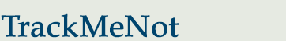
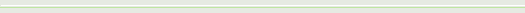

|  |
|
|||
| Tutorials / Frequently Asked Questions | ||||
|
|
|
 How to add a new RSS feedIt is highly recommended to update the default list of RSS feeds that comes with TrackMeNot. This video shows you how to add a RSS feed with only a few clicks.How to edit the RSS feedsYou can manage TrackMeNot a list of RSS feeds through the RSS editor. In this video, we explain how to create and delete the RSS categories that are used by TrackMeNot.TrackMeNot's click-through functionThe TrackMeNot click-through function has been fixed in this new version! Search result handling has been improved to make it more robust. TMN still does not click on sponsored results. In this video, we show how TMN is acting 'behind the scenes'. Simply click on the 'show frame' button, and you'll see.TrackMeNot's suggestion handlingWhen you typing your search query suggestions appear bellow. TMN behaves similarly to how you may when you click on the suggestions. This video explains how TMN click on search suggestions.Non-latin character support: TrackMeNot searches on BaiduThe RSS feed can be configured to extract keywors with non-latin characters. Therefore, you can use TrackMeNot on search engine that are commomly used in (for instance) China.
licensed under

|